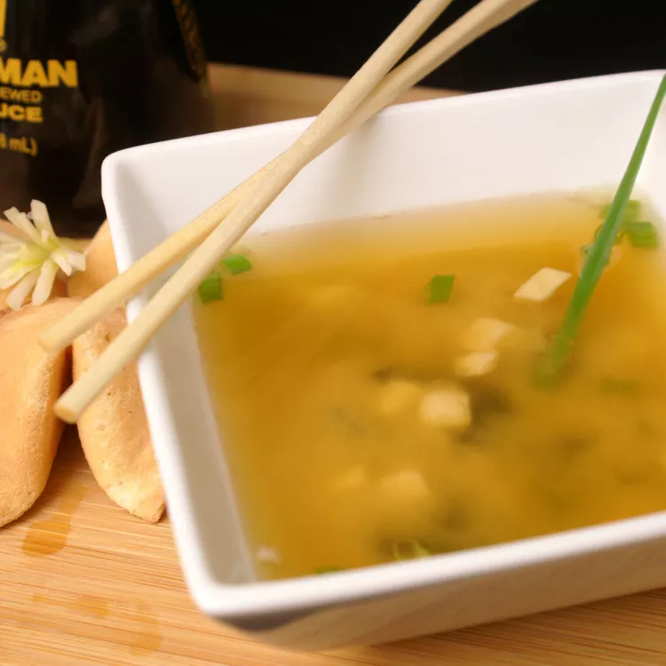

Miso Soup

Description
A healthy and comforting, traditional Japanese soup. Miso soup is traditionally served with rice.
Ingredients
4 cups water
2 teaspoons dashi granules
3 tablespoons miso paste
1 (8 ounce) package silken tofu, diced
2 green onions, sliced diagonally into 1/2 inch pieces
Steps
Combine water and dashi granules in a medium saucepan over medium-high heat; bring to a boil.
Reduce heat to medium and whisk in miso paste.
Stir in tofu.
Separate the layers of green onions, and add them to the soup.
Simmer gently for 2 to 3 minutes before serving.